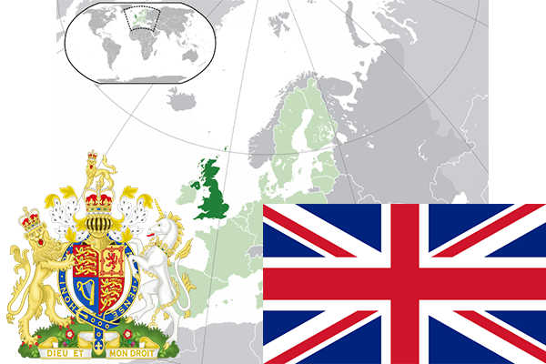

To`liq nomi: Buyuk Britaniya va Shimoliy Irlandiya Birlashgan Qirolligi
Region: Shimoli-Gʻarbiy Yevropa
Qonunchilik shakli: Konstitutsion monarxiya
Mustaqillik kuni: -
Poytaxt: London
Maydoni: 244,820 km²
Chegaradosh davlatlari: Irlandiya
Aholisi: 63 395 574 (2014-yil)
Aholi zichligi: 246 /км²
Aholining o`rtacha yoshi: 81,11 yil
Rasmiy tili: Ingliz tili
Dini: Xristian
Pul birligi: Funt sterling
Telefon prefiksi: +44
Internet domen: .uk
Xalqaro tashkilotlarga a`zoligi: BMT
Dengiz va okeanlarga chiqishi: Shimoliy Muz okeani
YIM: Butun: $2.56 trln. (2017-yil) Jon boshiga: $38,84
Yirik shaharlari: London, Manchester, Liverpul, Birmingem, Lids